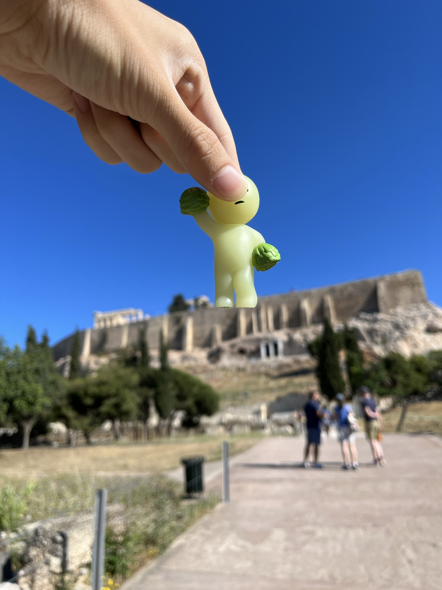
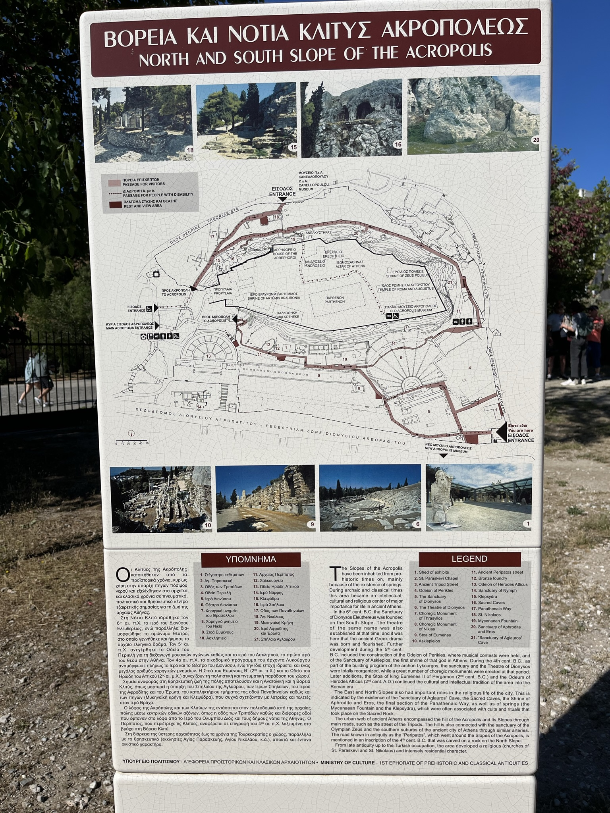
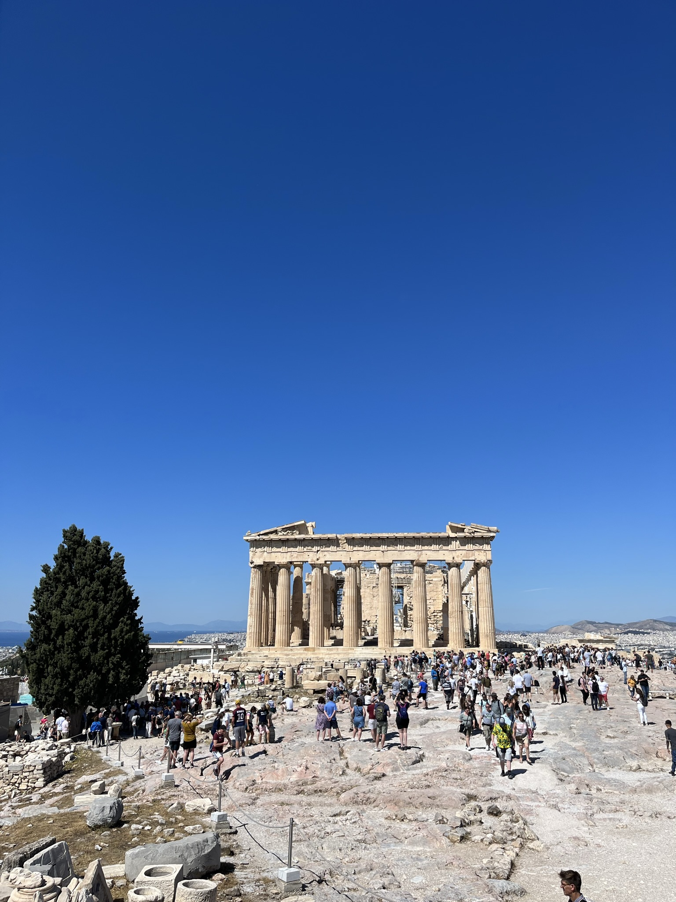
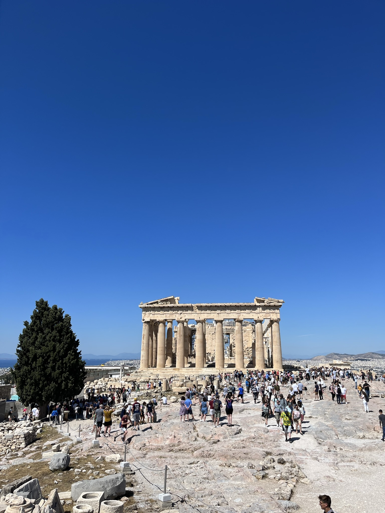
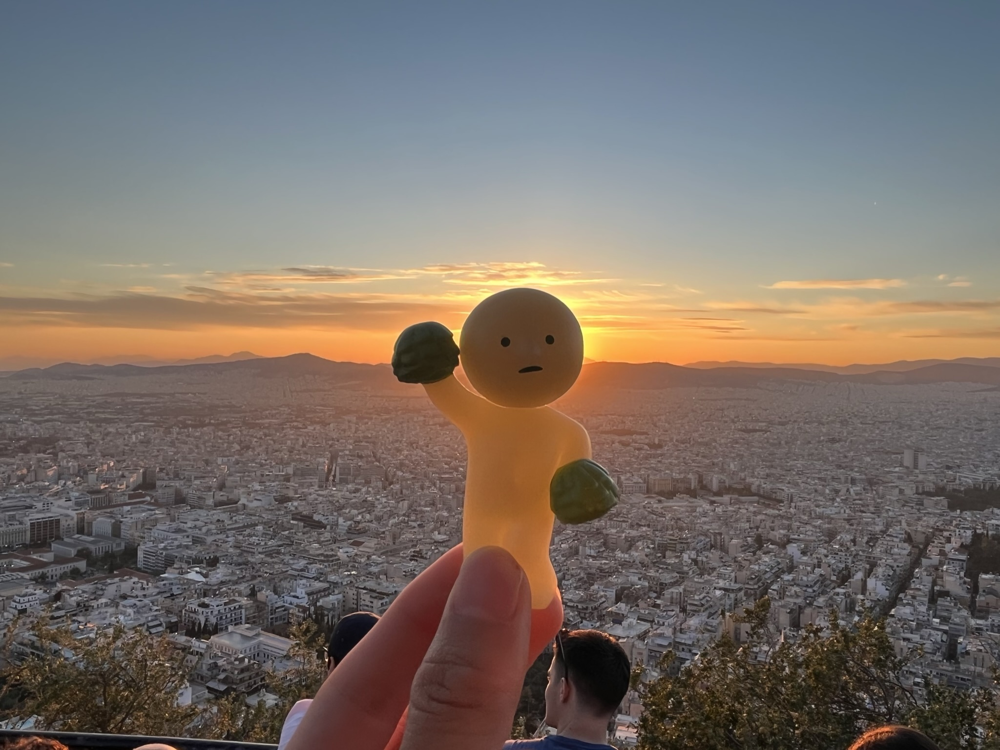
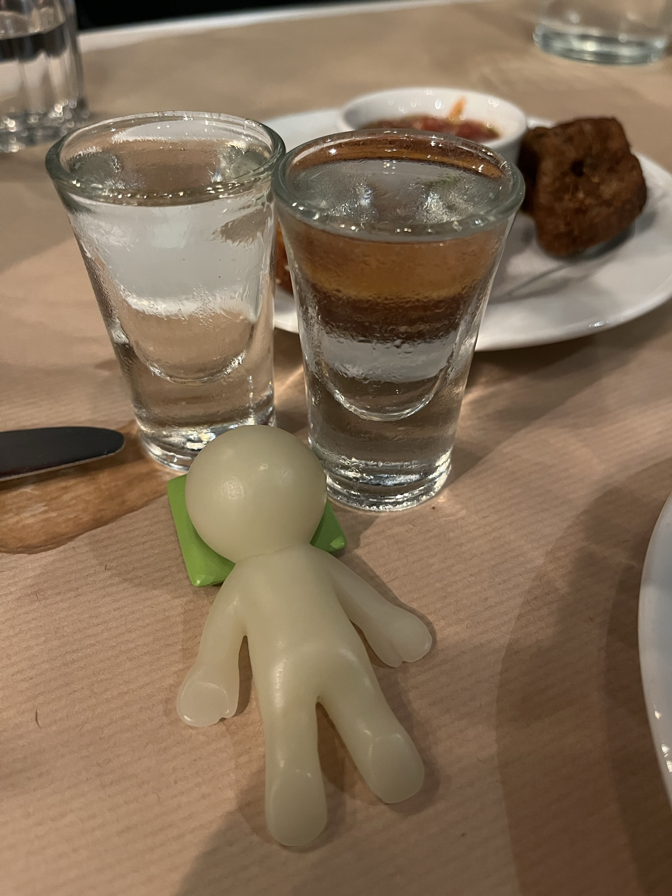

hi kathy,
it’s kenny today. everyone’s a little sleepy so I’m gonna be taking care of today’s recap. we leave greece early tomorrow morning, so today’s our last full day. thankfully, we get to spend it in the bustling capital and cultural center of Athens, so we got a lot out of it.
of course, we had to start the day with the acropolis, the pinnacle of ancient greek life. we stopped by the temple of zeus, which is unfortunately under construction, before entering the park gates and beginning the slow ascent to the top.
 along the way, we got to see well-preserved busts, aquaduct remains, and even a full (re-modeled) ampitheater that’s still used today. there were also many informational plaques around every attraction, so we spent some time reading them and/or standing awkwardly in front of the tour groups and trying to eavesdrop on the history of the acropolis.
some behind the scenes
after about half an hour, we approached the summit of the hill. for context, at the center of athens stands a massive hill, on which the most important buildings in ancient greece stood. as a result, buildings in the entire athens metro area is mandated by law to not exceed a certain height, so the sanctity of the acropolis has been preserved through the years.
...unfortunately, what we were not told was that it was apparently sacrilegious for smike, smatt, and smark to take pictures with the acropolis in the background. some unhappy government worker confronted me and made me delete all the pictures before directing his attention to some other poor tourists who were trying to climb up some rocks to get a good picture. fortunately, he didn’t make me delete the backups too, so I just restored the deleted pictures and had to be a bit more careful from this point on.
aside from that little blip, it was actually pretty amazing getting to the top of the hill. the parthenon, historically the temple devoted to the patron goddess Athena, is one of the most well-known and magnificent architectural pieces in the world, so I was soaking in the experience as much as I could.
 

you can see lycabettus hill from the acropolis, which I’ll talk about more later
from here, we continued on towards the more downtown-like part of athens, where there were a lot more stores and restaurants. our goal here was to find a place where we could do a rapid COVID test, since at the time the TSA required a test the previous day to return to the US. we were heading towards one that I found, but we ended up stopping at a random one on the way. we had to complete all the paperwork online at a nearby Starbucks, before the lady jabbed these sticks up our noses. this was my first nasal COVID test, which sucks so much compared to the spit tests that I’ve done so far. but then she came out from inside within 30 seconds and told us that we were negative... we think that they didn’t actually test us and told us negative to let us leave the country, but we got the certified negative test that we needed so we’ll take it hehe

from here, we started walking around and stopped at a little plaza for lunch. we ended up having these amazing gyros (a little hidden away store called Kostas) that had tomato sauce instead of white sauce as well as some mushroom risotto and pizza that were ok at a place called Rooster. the funny thing was that we were seated outside under these trees that gave some nice shade, but the leaves kept falling off and threatening to land on the pizza (thankfully they never did)

after lunch, we continued on towards Central Municipal Athens Market, a wet market that my parents were interested in checking out. it ended up being really cool, with these huge lamb carcasses just hanging out in the open, but what we focused most on was the seafood and we eventually left with some huge prawns and a couple local fish. when we arrived home at the apartment, we took a quick afternoon nap, and then dad busted out the apron and made an amazing garlic shrimp that was literally the best shrimp that I’ve ever had. the fish were okay I guess.
from here, we headed out to check out the agora and the temple of hephaestus, the latter of which being the best preserved temple in athens. both were pretty but a little boring, but they are truly important and can’t-miss landmarks in athens and I highly recommend at least checking them out. there was also a recent statue made with plato and confucius, of all people, so smark had a fun time talking with them.

finally, our last stop was sunset on lycabettus hill. we took the 40 minute walk over, and ended taking this train car elevator of sorts to the top of the hill. the funny thing was we were really running low on cash so we could only afford to take the elevator up the hill lol. we made it right in time for our last sunset in greece and got some nice pics before heading down the hill.

my sister and I actually stopped by a restaurant that my parents had gone to before I arrived called the Black Sheep. we got their fried oyster mushrooms, pork bites, and giant lamb shoulder, which was all delicious. this was one of my favorite meals in greece, and I was especially blown away by the pork bites, which were served with an amazing white wine sauce that I was drinking by the spoonful.
on the way home, we stopped by the panathenaic stadium, which was huge and beautiful when lit up at night. I think this was an amazing end to our trip, as we went straight to the airport the next morning.

all in all, our time in greece was amazing, and I’ll cherish all the memories forever. the food was delicious, the people friendly, and the weather almost always amazing (looking at you, santorini). the only thing I really didn’t like was the fact that the sewage system is old and can’t take toilet paper, so there were trash cans in front of every toilet for that reason... sorry if that was too much information. anyway, I’m excited to come home, and I’ll talk to you soon!
love,
smark (and others)
p.s. on the way home, I watched literally one of the worst pieces of acting I’ve ever seen (Double World), and the babies got drunk. sorry.